Top-Down AI prototype
Top-down zombie survival driven through AI
Project Type: University
Software/Language Used: Unity / C#
A zombie survival game where both the zombie enemies and human survivor are handled by AI pathfinding, steering and decision making. For this project, I was given a template and had to code the functionality of several steering behaviours, pathfinding algorithms and decision making scripts.
Steering Behaviours
To make AI agents feel natural in their movement, steering behaviours are used. They provide the AI agent with a force that affects their overall velocity and steers them in a desired direction. This could be towards a given point or away from a specific actor (etc). For this project, several behaviours were developed; they are as follows:
(Click on them to jump to their section!)
Seek
The Seek behaviour steers an AI agent towards a given point. This works by taking the direction to the point, multiplying it by a stength factor and then taking away the current velocity of the agent (giving the desired force thats steers towards the target point).
The code below shows how this steering is achieved. The direction is found by getting the target position and taking away the AI agents current position. Then, this value is normalised and multiplied by the maximum speed of the agent. Lastly, the current velocity is taken away from the result to give us our steering force.
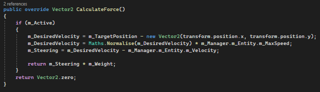
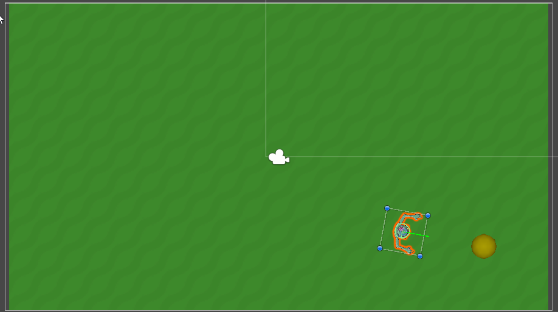
Flee
The Flee behaviour works similarly to Seek. It also gets the direction vector to a given point, but instead takes the negative of this and multiplies it by a strength factor to give a velocity that moves away. The current velocity is then taken away from this as with Seek which gives us a force that moves the AI agent away from a point or actor.
The code below shows how this steering is achieved. The direction is found by getting the target position and taking away the AI agents current position. Then, this value is normalised and the negative is taken and multiplied by the maximum speed of the agent to give us a velocity that is directed away from the target. Lastly, the current velocity is taken away from the result to give us our steering force.
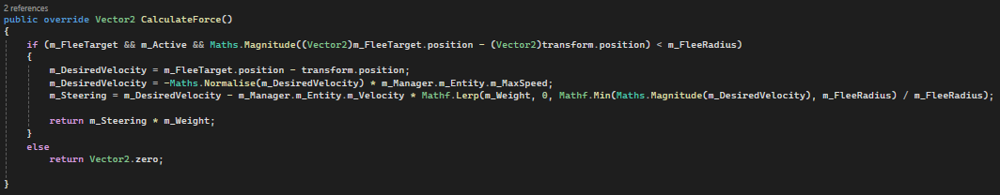
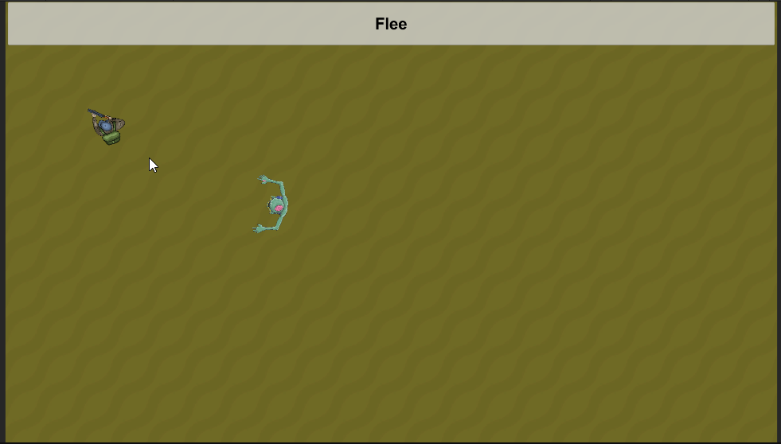
Wander
The Wander behaviour is also similar to Seek, but uses a circumference of points by applying a random radial adjustment to the target point. Then, a velocity to said point is created and the current velocity is subtracted from the result to give the final velocity. This creates a more dynamic movement pattern, which can be seen as more akin to human walking.
The code below shows how this steering is achieved. The target position is determined by using an angular displacement with a random radian value. This is then applied to the circle position by seperating the X and Y components. This then gets applied to the circle and multiplied by a wander radius to give us the target position. The rest is simply using the Seek behaviour as follows:
The direction is found by getting the target position and taking away the AI agents current position. Then, this value is normalised and multiplied by the maximum speed of the agent. Lastly, the current velocity is taken away from the result to give us our steering force.
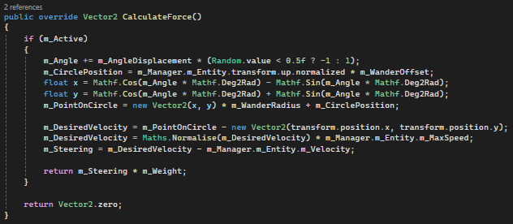
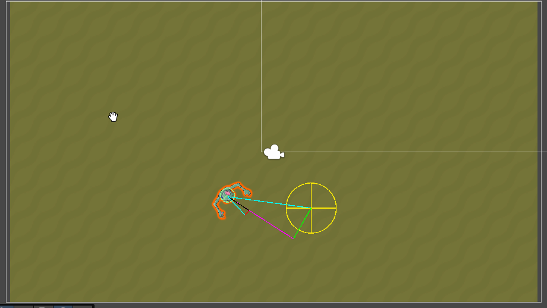
Arrive
The arrive behaviour applies a slowing down effect to the Seek behaviour. It takes the velocity of Seek and then applies a factor to it based on the distance remaining. This is determined by a slowing radius. When the distance is less than the slowing radius, then a decceleration factor gets applied. This creates an effect that gives the impression of arriving at a destination.
The code below shows how this steering is achieved. After finding the direction of the target, a comparison is made between the magnitude of the distance and the radius of the slowing down effect. If we enter the slowing area we then multiply our value by a decceleration value to get our slowed velocity.
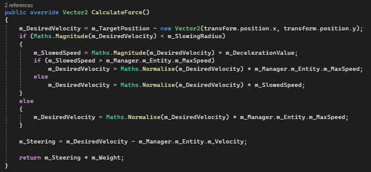
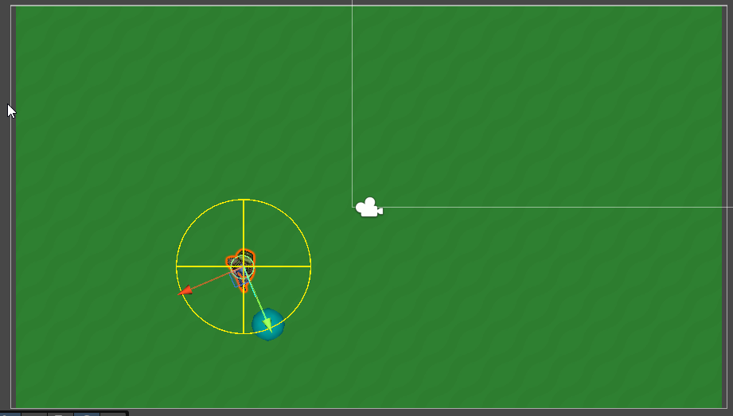
Pursuit
The pursuit behaviour uses the targets velocity to predict where they will be and move towards said position. This is done by getting the targets velocity and applying that to their current position to get a predicted position, then Seeking to it. This creates the effect of an AI agent chasing another entity and gives it the intelligence to understand that the targets position is changing.
The code below shows how this steering is achieved. The target position is found by taking the distance to the target and the combined speed of the AI agent and the target, then dividing them to get a prediction time. This then gets applied to the X and Y values of the desired velocity by multiplying it by the velocity of the target if the velocity is greater than 0. The rest follows the normal Seek behaviour of applying max speed and comparing with the AI agents current velocity to find the steering force.
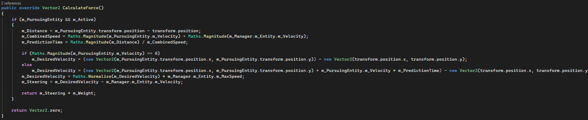
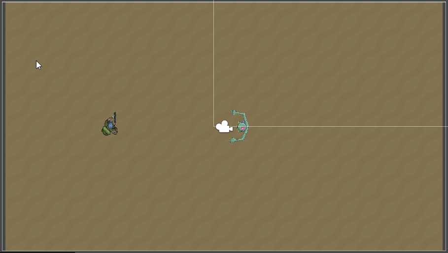
Evade
The Evade behaviour is similar to that of Pursuit but instead uses the predicted position of the target as the position to flee from. It uses the Flee behaviour instead of Seek, so as to give the impression of intelligence in trying to avoid another actor.
The code below shows how this steering is achieved. The target position to flee from is found by taking the distance to the target and the combined speed of the AI agent and the target, then dividing them to get a prediction time. This then gets applied to the X and Y values of the desired velocity by multiplying it by the velocity of the target if the velocity is greater than 0. The rest follows the normal Flee behaviour of applying max speed, taking the negative and comparing with the AI agents current velocity to find the steering force.
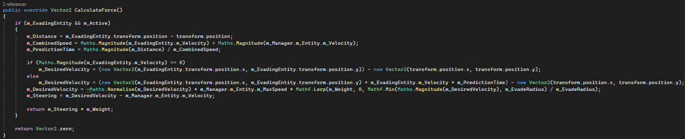
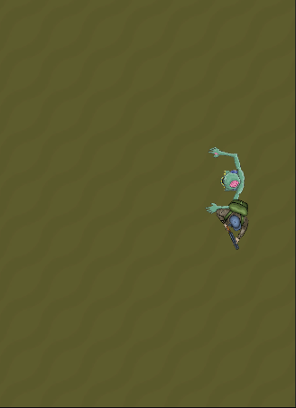
Collision Avoidance
The collision avoidance behaviour uses raycasts (feelers) to sence where other actors are and create a force based on how close they are to move the AI agent away. This is done by using an array of feelers and getting the distance that they hit a target at to then determine which is more important and how much to push away. Then, the position of contact with the feelers is used as a Flee target and the velocity is determined using said behaviour. This creates the effect that the AI agent is avoiding other actors in a given world, rather than moving into them and appearing unintelligent.
The code below shows how this steering is achieved. A loop is created that goes through each feeler and performs the raycasts for each based on preset vectors and lengths. Each time, if a feeler hits something on its mask layer, it compares the distance that it hit and that of the last saved hit. If this distance is less then it takes the new feeler and distance (descarding the previously saved one). Then after going through each feeler, if there is a target to flee from, based on whether anything is hit by the feelers, the Flee behaviour is performed using the distance found and the target hit.
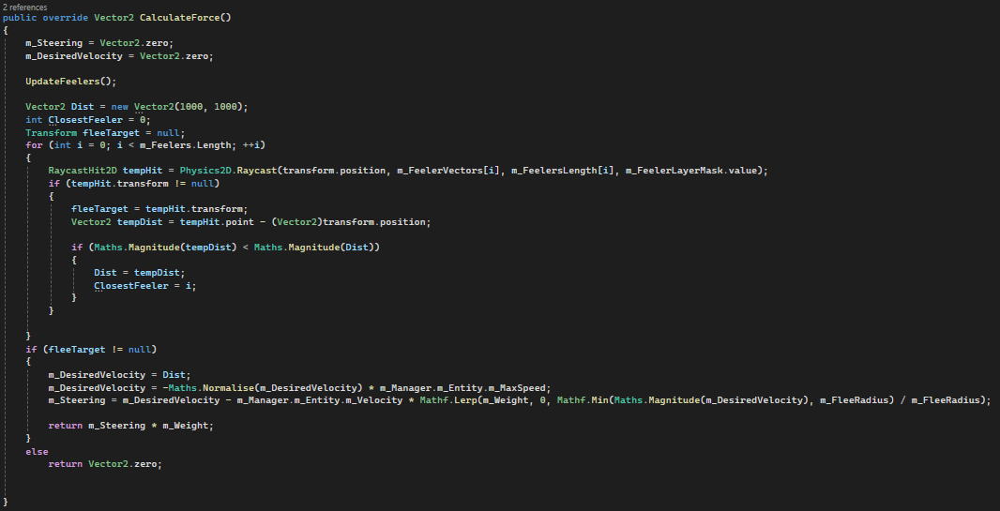
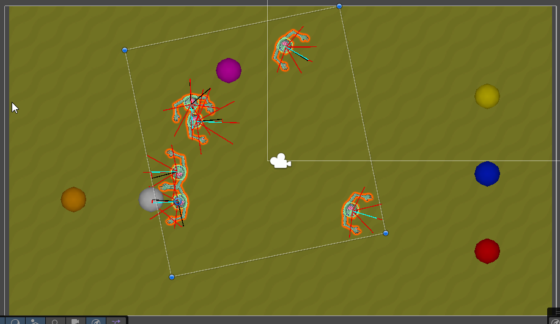
Pathfinding Algorithms
Pathfinding algorithms create sequences of points that take AI agents from one point to another. They each work in different ways and try to find the best possible path. To do this a grid structure (or some structure of points) is required to give the algorithm possible positions that could be used to get to a desired one. Some of the pathfinding algorithms created for this project are as follows:
(Click on the name to navigate to the algorithm!)
Dijkstra
The Dijkstra algorithm is a breadth-first search. It searches the shortest distance node each time to see if it is the desired node, then adds it to a list of nodes to search if it isn't. The search is therefore not very efficient and is one of the slowest in finding a path, but it will always find a route and is relitively simply to code (comparitively).
In the video above, dark green tiles are tiles that are searched, green tiles are ones that are added to the list of nodes to search and the light blue tiles are nodes not searched.
The image below shows a snippet of the code for the Dijkstra algorithm. It uses a visited and not visited list to search the grid of tiles from a starting point. The current node is checked to see if it is the desired node, then each adjacent nodes are added sequentially to the not visited list if they are not in it already. This includes calculating a cost for them based on their distance from the starting node (which is calculated with the cost of the current node). Then the current node is added to the visited list and a new current node is chosen by looking through the not visited list for the cheapest node.
In the event of a node being visited a second time, the current cost of that node is tested against the new route and the cheapest is set to the cost of said node. Ultimately, when the desired node is found, the route to it is found by looking at the nodes parents, which always trace back to the start and will follow the cheapest route there.
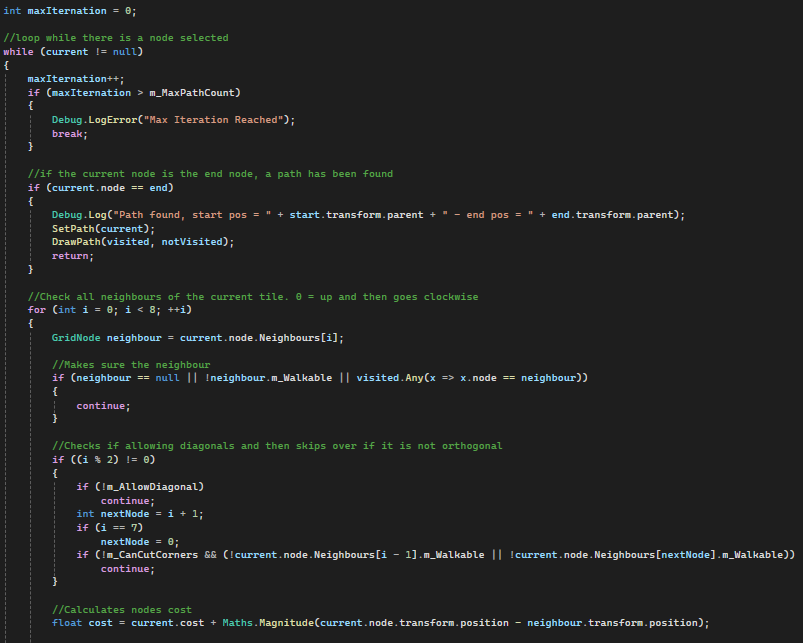
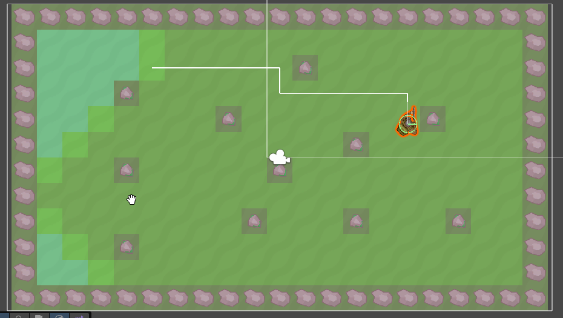
A Star
The A Star algorithm is a variation of Dijkstra that uses a heuristic to improve efficiency and calculating speed (making it a depth-first search). A heuristic is a value that is applied to each tile describes how likely the tile is to be apart of a better route (i.e. being closer to the target is a lower value). This allows A Star to direct its search towards the target destination rather than searching every single route, which leads to the algorithm being more efficient and quicker to find a route.
In the video above, dark green tiles are tiles that are searched, green tiles are ones that are added to the list of nodes to search and the light blue tiles are nodes not searched.
The image below shows a snippet of the code for the A Star algorithm. This algorithm uses an open and closed list to organise nodes that are visited or not. This is because nodes can be returned too the open list when a cheaper route to said node is found. Then, instead of adding every node, each neighbouring nodes cost is calculated by using the cost of the node combined with the Heuristic cost, determining the overall cost of the node. This then informs the next cycle which node to choose, as with the addition of the heuristic, nodes closer to the target node will have a much lower cost than those further away, tailoring the search in the direction of the target node.
The heuristic can be calculated in several ways, but for this algorithm the Manhattan heuristic was used. The cost for Manhattan is calculated by looking at the horizontal and vertical distance to the target point and combining them together.
.png)
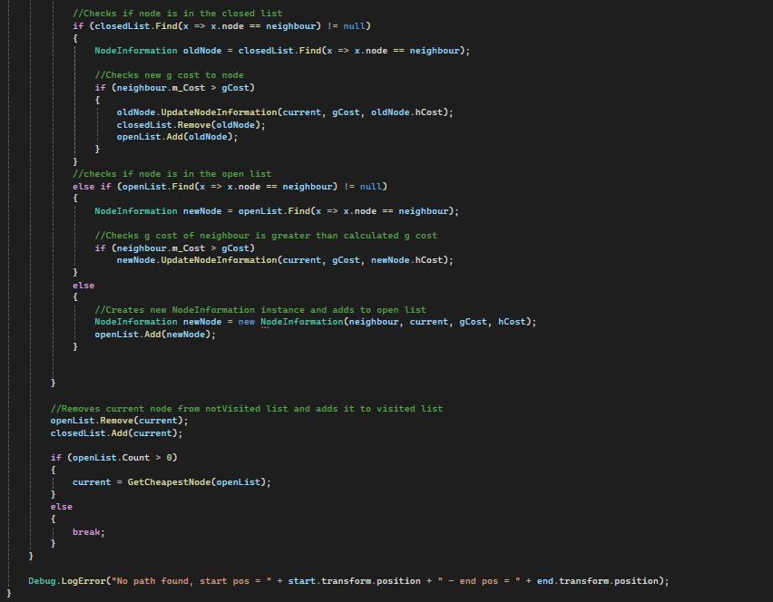
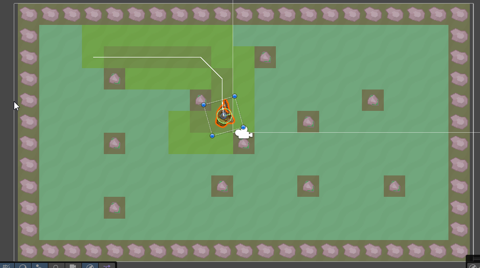
Theta Star
The Theta Star algorithm is a variation of A Star. The difference is that Theta Star changes the route based on whether a node is visible from the previous nodes parent. Think of it as cutting out the middle and just taking the important nodes. It makes the route slightly better by tightening the route around obstacles. The solution I created did this successfully but fails occassionally due to the obstacle hitboxes not perfectly filling the tiles (the solution uses raycasts rather than checking the tiles in the line).
In the video above, dark green tiles are tiles that are searched, green tiles are ones that are added to the list of nodes to search and the light blue tiles are nodes not searched.
Below is a snippet of the code for Theta Star. As Theta Star is a variation of A Star, it uses the same code for most of the algorithm and includes the code below. This code checks that the node is not the start or one of the first set of nodes added. Then it performs a raycast and, if the raycast does not hit anything, reparents the current node with that of its parents parent. this allows it to cut out redundant nodes.
As this method is using raycast it does not perfectly align with the grid layout (as obstacles do not take up the whole grid). This leads to the AI agent occationally getting stuck. To amend this, a check of each tile that the raycast touches would be used (if time had allowed for it).
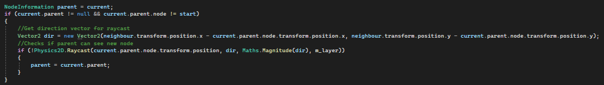
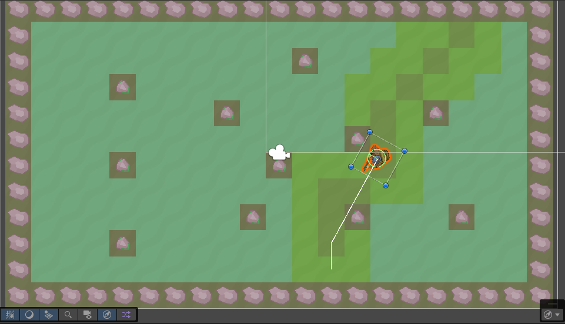
Pathfinding: JPS (Jump Point Search)
Jump point search (JPS) is a much more complicated pathfinding algorithm, warrenting its own section. (I would recommend looking into this algorithm if my explination isn't clear due to the complexity of its method!) Rather than recursively searching nodes nearby, or nodes in the right direction, it effectively scans directions for nodes of 'interest', which are nodes that are next to obstacles (or the target node itself). It will then add these nodes to an open list and repeat this process from nodes of interest until is it searching from the target node (at which point a route is found).
To achieve this effect, the search has some rules that have to be followed:
1st: the starting node has all of its directions tested for interesting nodes. (This is because it is the starting node and has no parent).
2nd: when searching horizontally or vertically, the only node that is then jumped to is in the same direction (so if we are searching upwards, we only look at the next node upwards).
3rd: when moving diagonally, we concider the horizontal and vertical adjacent in the direction of travel. (This would mean checking the north and east nodes if moving north-east)
4th: when finding an 'interesting' node, specific nodes are added to its next jump points (directions of search) based on the direction of travel. (This is to account for nodes that would be missed by being behind obstacles)
By following these rules we always find the target node much more efficiently and quickly than using any of the previously covered pathfinding algorithms.
In the video below, dark green tiles are tiles that are searched, green tiles are ones that are added to the list of nodes to search and the light blue tiles are nodes not searched.
The code below shows how the algorithm is managed. The recuring aspect to the loop is handled fairly similarly to that of the other pathfinding algorithms, as most of the comlicated aspects are handled by functions. If the current node from the open list is not null then it check to see if it is the target node (to which it would then construct and return the route if true), otherwise it starts the search, by looping through each of the current nodes successors (directions to search) and starting a function that searches for any 'interesting nodes'. After which, clean up happens by sorting out the current node moving to the closed list and getting the next node to search.
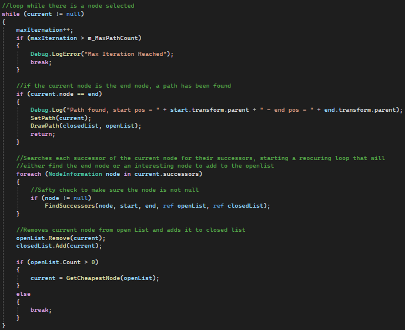
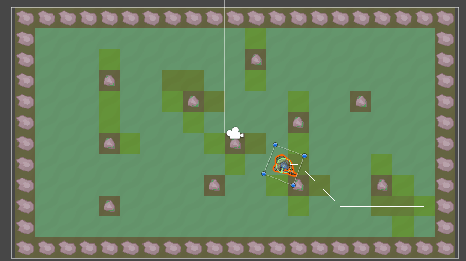
The code below shows a function that calls itself looking for 'interesting nodes', constructing a list of successors for them. This function starts of by checking if it is the starting node or the target node and handles both accordingly. Then, the direction to search in is determined by looking at the vector from the parent node to the current one. This is then used to inform the search for 'interesting' nodes, by checking specific neighbouring nodes for obstacles based on this direction value and then adding other neihbouring nodes to the successors list if they aren't also obstacles.
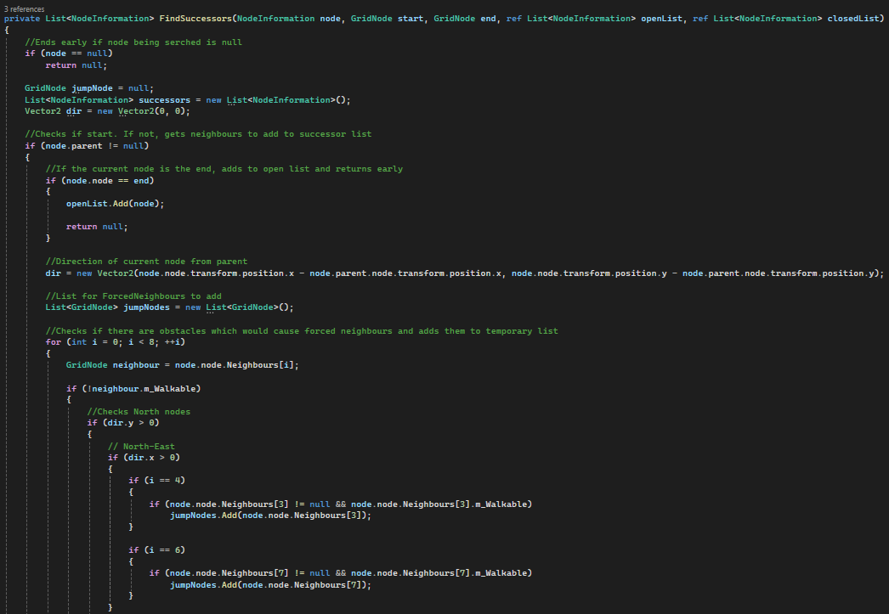
If there was an 'interesting' node found, then it gets added to the open list after constructing the cost of the node and ensuring all successors to said node have been added to its successors list. Otherwise, a function is used to find if there are any successors to the current node (based on the direction) and if so, the function calls itself with the next node as its current node (creating the nested loop that searches the direction to its end).
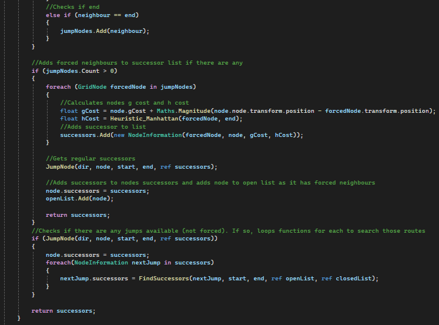
The code below starts the function that finds successors that aren't caused by 'interesting' nodes. The set of nodes to check/add are determined using the direction value.
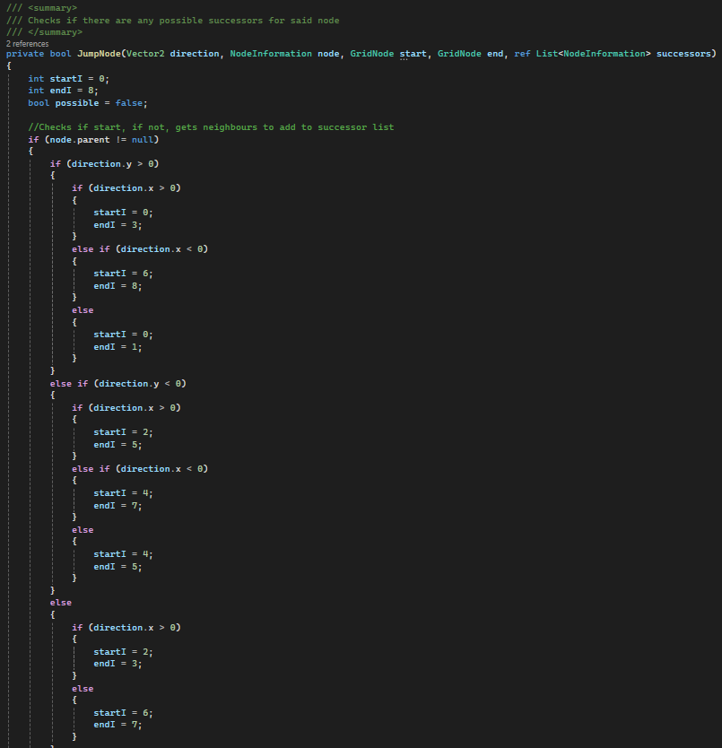
Once this is done, the nodes are checked to see if they are obstacles or not and then added to a temporary list of successors that gets returned to the previous function.
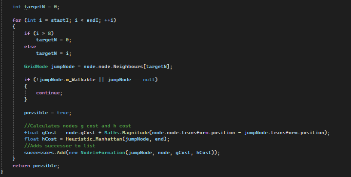
If the current node is the starting node then all the neighbouring nodes that aren't obstacles are added instead, allowing the rest of the search to work.
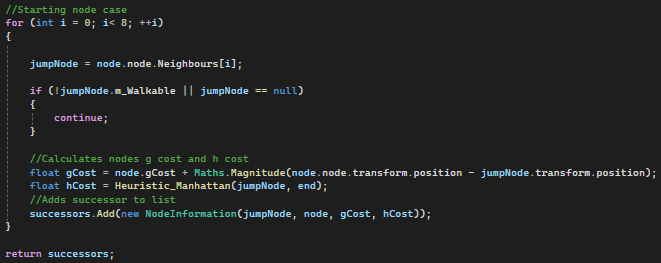
Decision Making: FSM (Finite-State Machine)
A Finite-State machine (FSM) is a decision making method that allows an AI agent to switch between behaviours based on certain conditions; It has been used for the human AI in the final scene of this project. States each ahndle an individual behaviour, which is a set of actions taken until the state changes. Conditions are checked every frame and then transitions occur based on those conditions. This could be a health threathhold or an amount of ammo or a number of enemies. FSM are one of the more simpler decision making methods and as such have weaknesses, namely the difficulty in expansion. Adding a new behaviour means adding a new set of conditions for a new set of transitions which makes any given AI much larger and harder to understand. For this project, this wasn't an issue as the scope of the Human AI was small.
Below are images of the plan for the FSM states and their transitions. (Note: the refferences to Fuzzy Logic are from an earlier plan to incorperate Fuzzy Logic decision making and were not used in the final product.)
The states created are as follow in the 1st image below (excluding the bonus one):
- Ambush: the human moves to a set of entry points (in an attempt to find enemies to attack)
- Meander (Wonder in code): the human moves to a random reachable point
- Attack: the human attacks a select enemy while maintaining a distance from all enemies
- Retreat: the human flee from nearest enemy in view
- Hide: the human moves to a set of hiding points (in an attempt to escape enemies)
- Resupply: the human moves to the hearest ammo or health pick up depending on which is desired more (health has priority over ammo)

These states each have behaviour that aligns with the humans goal of surviving the zombies and the transitions reflect this. In an effort to keep enemy numbers low, the human will seek them out while staying near the building and attack any that get close or in view. Then, if the human needs to it will go for health and ammo, but if it doesn't have much health left then it will focus on retreating from nearby enemies and going to hiding places until they have enough health to freely wander and then, enough ammo to freely seek out enemies.

The code below shows the human states and how the state is updated. When the function is called, it resets everything before switching the state and establishing what behaviours need to be active.
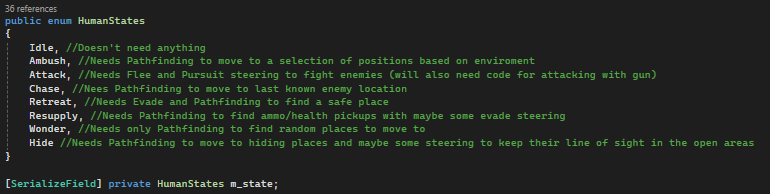
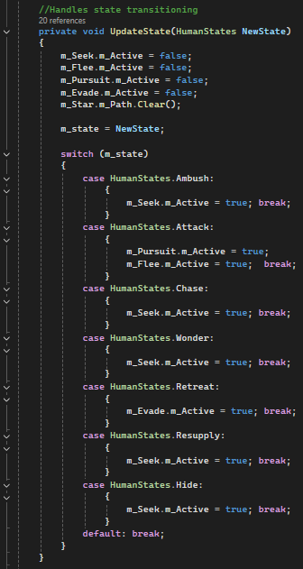
The code below shows how the state conditions are checked and transitioned between. The transitions are handled using a switch statement and various variables from both the script and the sight actor when enemies in sight become relevant.
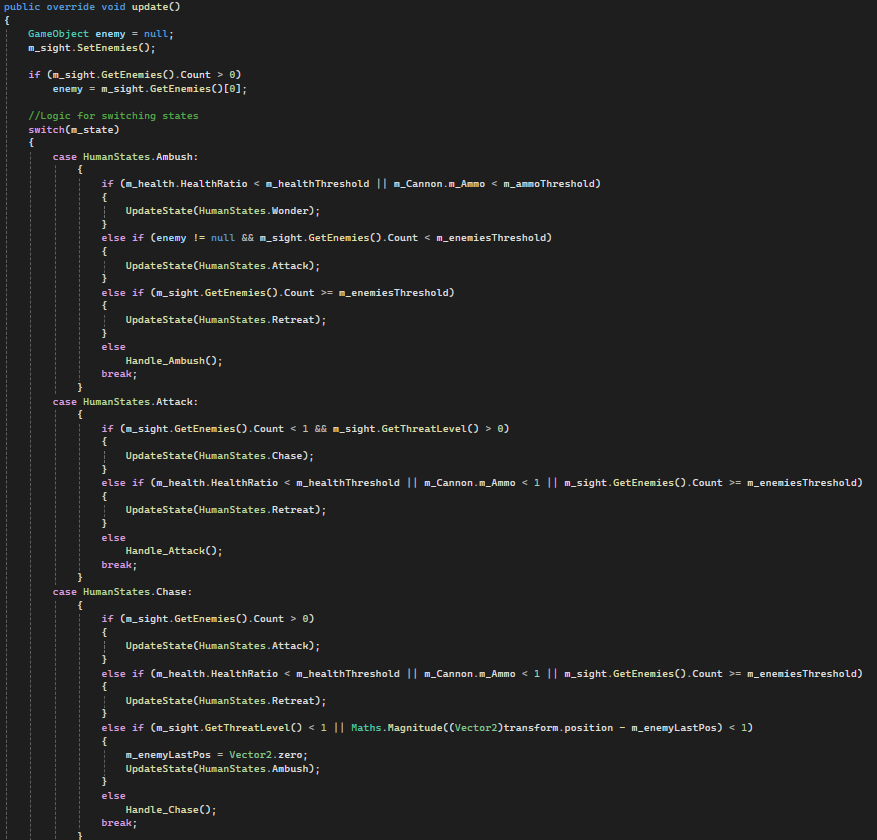
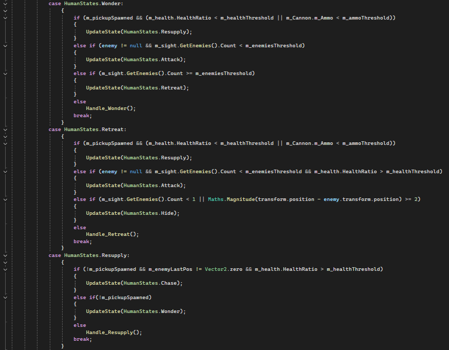
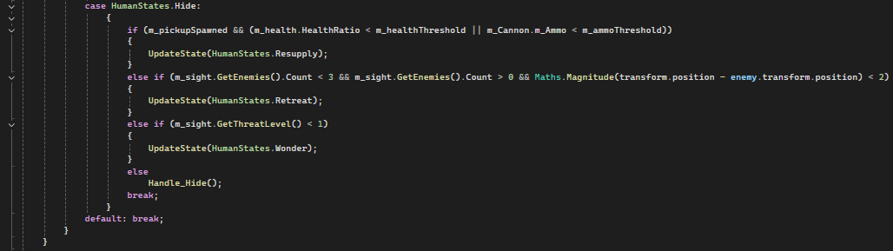
The code below shows how the Ambush state works. The function is called that will check if there is a desired location and will set a new one based on the input tile when the last is complete or discarded by a state transition. In this case, a random tile from the entry points list is chosen if there are any (or a random walkable tile if not).
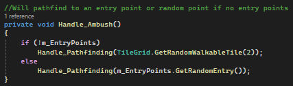
The code below shows how the Attack state works. First the target is set from the list provided by the sight actor. Then, the steering behaviours are set and the weighting for the pursuit is adjusted based on the distance between the human and enemy. Lastly, the ataack is called and the enemies last position is recorded.
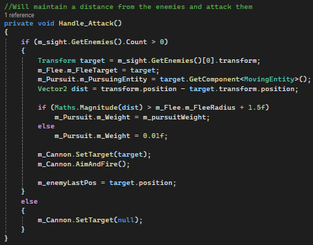
The code below shows how the Chase state works (an extention of the Attack state). The function is called that will check if there is a desired location and will set a new one based on the input tile when the last is complete or discarded by a state transition.In this case, the nearest tile from the enemies last seen position is chosen to allow the human to go after the enemy rather than forget them.
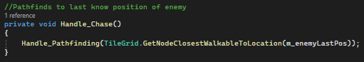
The code below shows how the Wonder state works. The function is called that will check if there is a desired location and will set a new one based on the input tile when the last is complete or discarded by a state transition. In this case, a random reachable tile is chosen.
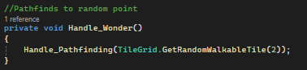
The code below shows how the Retreat state works. First, the closest enemy is grabbed from the sight actor and then the Evade steering behaviour is performed against said enemy.
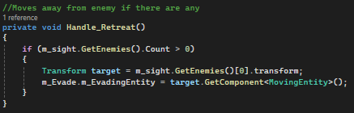
The code below shows how the Resupply state works. First, the function checks if the health is below its threshold, which allows it to prioritise health. Then the target location is decided upon and handled by the pathfinding algorithm.
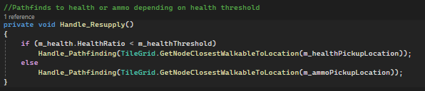
The code below shows how the Hide state works. The function is called that will check if there is a desired location and will set a new one based on the input tile when the last is discarded by a state transition. In this case, a specific tile from the hide points list is chosen (by the hiding points actor) if there are any (or a random walkable tile if not). The average enemy position is also calculated and passed through to help the other actor find a good hiding point.
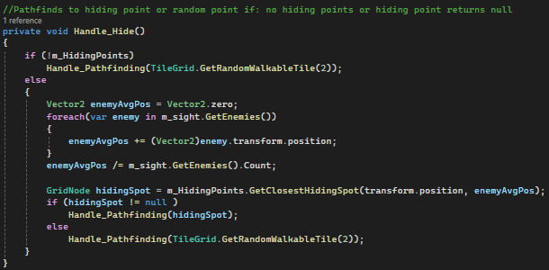
The code below shows how entry points are set. At the start of the level, the script gets all its children actors and adds them to a list of points. Then, the list of points are attributed to specific tiles for the pathfinding algorithms using a function from the framework that finds the nearest tile thats walkable.
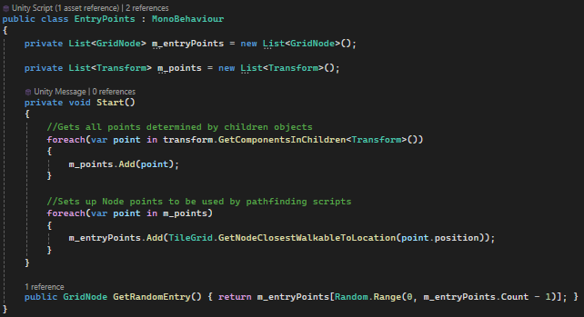
The code below shows how hiding points are set and grabbed. The setting of the points is the same as above, but when the human calls the function to get one, instead of a random point being returned, the points are tested against the players position and the enemies within a certain distance. This allows the point returned to be the most likely and closest safe location.
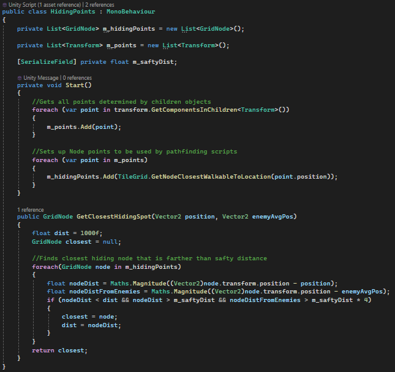
Human Sight
For the purpose of mimicing human sight, I developed a actor for the human that would manage the sight of the human. This actor would be child to the human actor and worked by using a number of raycasts at specific angles to create a field of far vision, with a circle collider offset from the human to create a peripheral vision. When either are hit, they check that other actors tag to see if they are an enemy and if so, add to a list of enemies. This list get reset every frame to account for enemies that end up colliding with both vision fields.
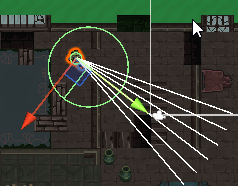
The code below shows how the far sight check works. First, it clears the list of enemies in the far sight. Then, it sets the angle for the number of raycasts to be performed in the set sight angle. Then each raycast is performed in a for loop and any actors hit with the 'Enemy' tag are added to the list of enemies in far sight.
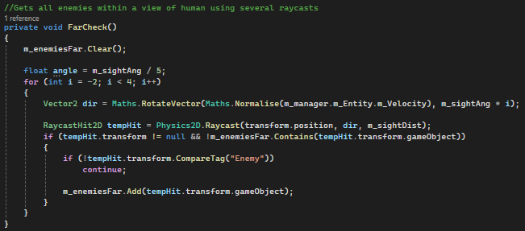
The code below shows how the human gets enemies close to them. An overlap circle is used and anything hit is then tested for line of sight using a raycast, so that the human cannot see through obstacles.
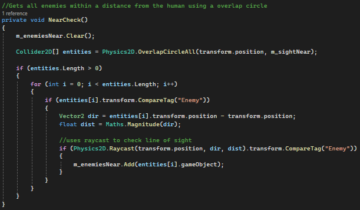
The code below shows how the two sights are combined together. The function takes all the enemies in the far list and then checks through the near list and adds any that aren't already added from the far list. While this is happening, two counters are increasing for the threat the human feels and the number of known enemies in the humans field of view. This is to be used by the decision making for state transitions.
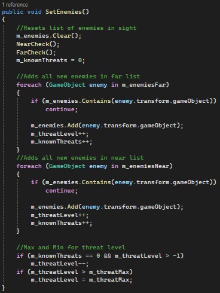
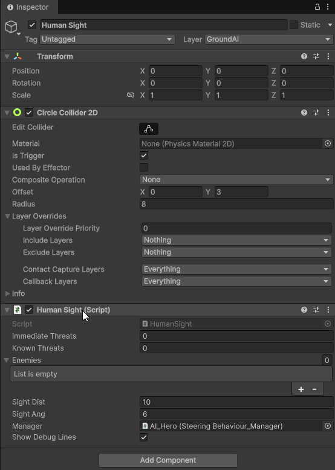
Decision Making: Behaviour Tree
A behaviour tree (BT) is a decision method algorithm that determines actions by following a series of steps layed out by a tree structure. The BT has a starting node and follows down nodes (depth-first) taking each node and progressing on a true result and moving along on a false. This allows for a more expandable and understandable algorithm than that of FSM and works well for more complex behaviour.
The images below shows the tree strucure in both planning and code. As can be seen, there are various kinds of nodes that perform different functions within the tree, which can be placed in two categories:
Query: Performs a check to see if a condition is true before continuing
Behaviour: Performs a set of actions, returning true or false based on the result of those actions.
Within these, there are basic nodes that perform operation within the tree and complex nodes that are created for the specific AI agent or type of agent.

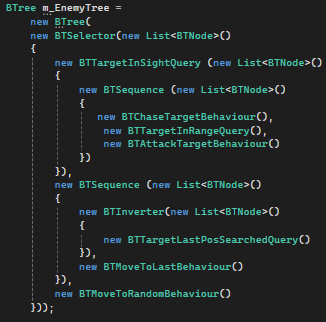
The tree allows the enemies to roam the level, chase players and attack them when in sight and go to the players last position to see if the enemy can catch up to them.
The code below shows the basic node and tree base classes. The basic tree is a simple manager for the tree. It handles the initialisation of the tree as well as establishing the functionality that starts the progression through the trees behaviour.
The basic node class handles the functionality that all tree nodes need. This includes the states of the nodes operation (success, failure and processing), the initialisation with setting up children nodes, the virtual function of what the node does to progress the tree and perform behaviour, and the initialisation of the blackboard, which is nessessary to have the tree have a shared point of data to refer too.
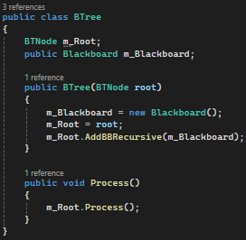
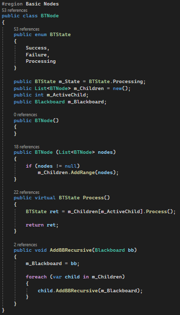
The code below shows the blackboard base class and the utilisation of it in the enemy script. The blackboard acts as a shared place of data for the entire tree. Data can be added, amended and retrieved from the blackboard, as seen below. The second image shows how this data is added to the blackboard. It requires a key that serves as a unique identifier for the data and the data itself in the form of a reference.
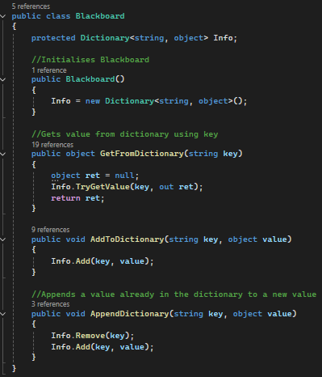
Below is code for the Selector node. The Selector node will progress through its children nodes until one return failure. This will stop the sequence from progressing to the next child node.
Below is code for the Sequence node. The Sequencer node will progress through all its children, until one returns success. This will stop the sequence from progressing to the next child node.
Below is code for the Repeater node. The Repeater node will repeat its children nodes a set number of times before returning.
Below is code for the Invertor node. The Invertor node will invert the result of its children and then return the result.
Below is code for the Succeder node. The Succeder node will return true, no matter what its children nodes return
The code below is a query node that checks if the human is in sight. It gets the relevant data from the blackboard and then checks using the GetEnemy function before processing children. Otherwise, it returns failure.
The code below is a behaviour node that navigates the enemy to a human in sight. It gets the relevant data from the blackboard and then gets the human agent. With the human agent, it uses its transform to see how close it is and then uses the pursuit behaviour to navigate towards the human target.
The code below is a query node that checks if the human target is in range. It gets the relevant data from the blackboard and then checks using the GetEnemy function and a distance check using the magnitude of the vector to the human target before processing children. Otherwise, it returns failure.
The code below is a behaviour node that performs the enemy attack against a human target in range. It gets the relevant data from the blackboard and checks if the enemy can attack before applying damage and calling the attack function.
The code below is a query node that checks if the last position of a human target was reached by the enemy. It gets the relevant data from the blackboard and then checks if the last position of the player is not zero or equal to the enemy's current position before returning success. Otherwise, it returns failure.
The code below is a behaviour node that navigates the enemy to the last position of a human target. It gets the relevant data from the blackboard and navigates to the target position using its pathfinding algorithm, returning success when it is within a small distance from the target. Otherwise, it returns processing.
The code below is a behaviour node that navigates the enemy to a random position. It gets the relevant data from the blackboard and navigates to the target random position using its pathfinding algorithm, returning success when it is within a small distance from the target. Otherwise, it returns processing.
The code below handles the updating of specific data to the blackboard and starts the enemy tree's processing. These values have to be appended frequently as they can change constantly.
The code below shows the attack timer function. The function updates the blackboard boolean value and then handles the timer progression using deltatime.
The code below shows how pathfinding is handled by both the enemy and the human agents. First, a check is performed to see if the path has ended to then keep the agent at said position until changed. Then, the pathfinding is handled by getting the closest point to navigate to and performing the Seek steering behaviour to then follow the path created.
Level Layout
The level was designed to have a variety of routes for the player to take within the building, as I felt a building would add to the atmosphere of the project. The plan included several hiding and entry points; opennings to the house and routes that would be slower and have a mask to increase their cost in the pathfinding algorithms and health and ammo spawns. During implementation, these features had slight adjustments from time constraints and testing.
Firstly, the spawns for health/ammo and the higher costing routes were scrapped due to time constraints. On the other hand, the hiding points and entry points were kept and adjusted slightly to match level changes made. The level had some additional entry points added, as well as some more routes openned up. This was to help the human ai not be cournered as often and to provide all ai agents with more options for navigating around the map. The changes were also made to account for the size issues of the level.

Cut features
I initially planned to make the human have Fuzzy logic, which is a form of decision making algorithm which is designed to mimic human approximation and judgement better. This however, didn't make it into the final project due to time constraints.
It would have been achieved using 4 membership graphs and a set of 'human trait' values that would influence how the data is read by the human AI. The human traits were intended to mimic the most important factors that would influence a humans logic in survival situations.


I also had plans to add more variety to the enemies, as the base behaviour tree was easy to adapt and add new tree nodes too. These plans included having a slower enemy that prioritised pathing that would cut the human off and an enemy that remained outside and wouldn't attack but would add to the threats for the human, making them more likely to change state. Unfortunately, due to time limitations, these concepts were discarded.